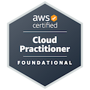

With over nine years of experience in software engineering, I bring a strong focus on back-end technologies and cloud solutions, particularly Java and AWS Cloud. My full-stack development expertise enables me to design and implement robust solutions that drive innovation and efficiency.
Cognizant Technology Solutions - Chicago, US (Jan 2023 - Present)
Client: JP Morgan Chase
Cognizant Technology Solutions - Chennai, India (Mar 2019 - Dec 2022)
Client: Bank Of New York Mellon Corp
Intellect Design Arena Limited - Chennai, India (Jul 2016 - Feb 2019)
eG Innovations Pvt Ltd - Chennai, India (Nov 2014 - Jul 2016)
Java 8, Spring Boot, Rest API, Microservices, Kafka, MQ, Docker, Kubernetes, AWS EKS, Gaia Cloud, Terraform, Oracle DB, MongoDB, PostgreSQL, AWS RDS, JUnit, Jenkin, Jules, BitBucket, GitLab, CI/CD, SonarQube, Splunk, Spinnaker, Dynatrace, JIRA.
|  |
AWS Cloud Practitioner Certification |
Anna University - Chennai, India
July 2008 - May 2012